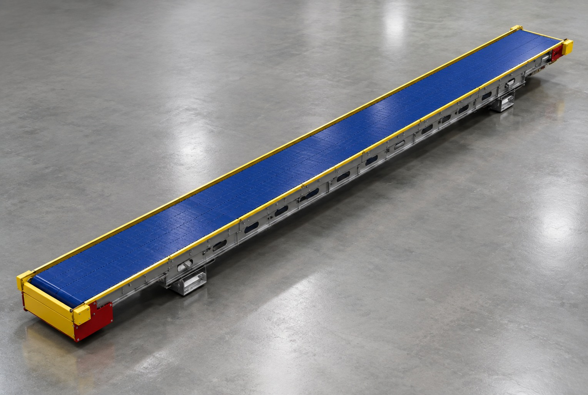
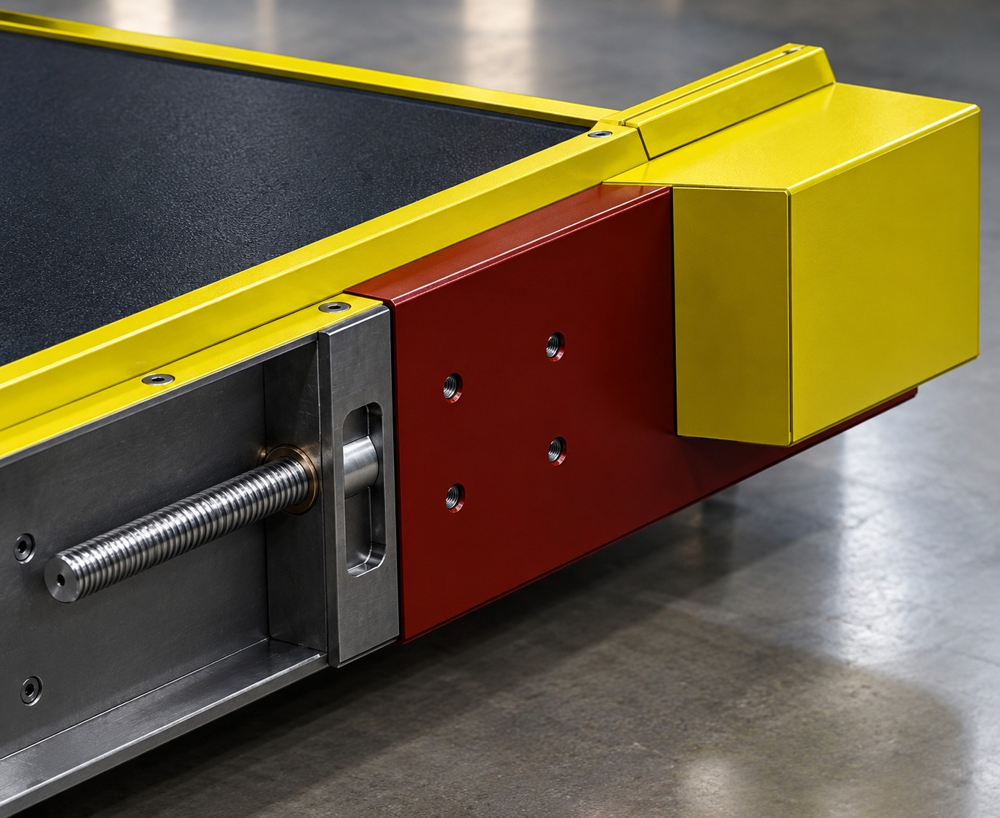
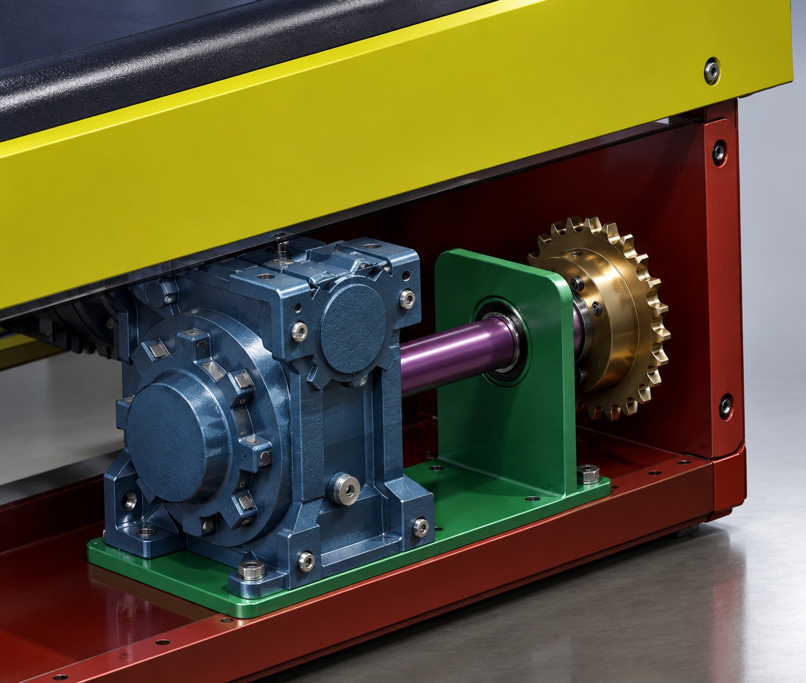
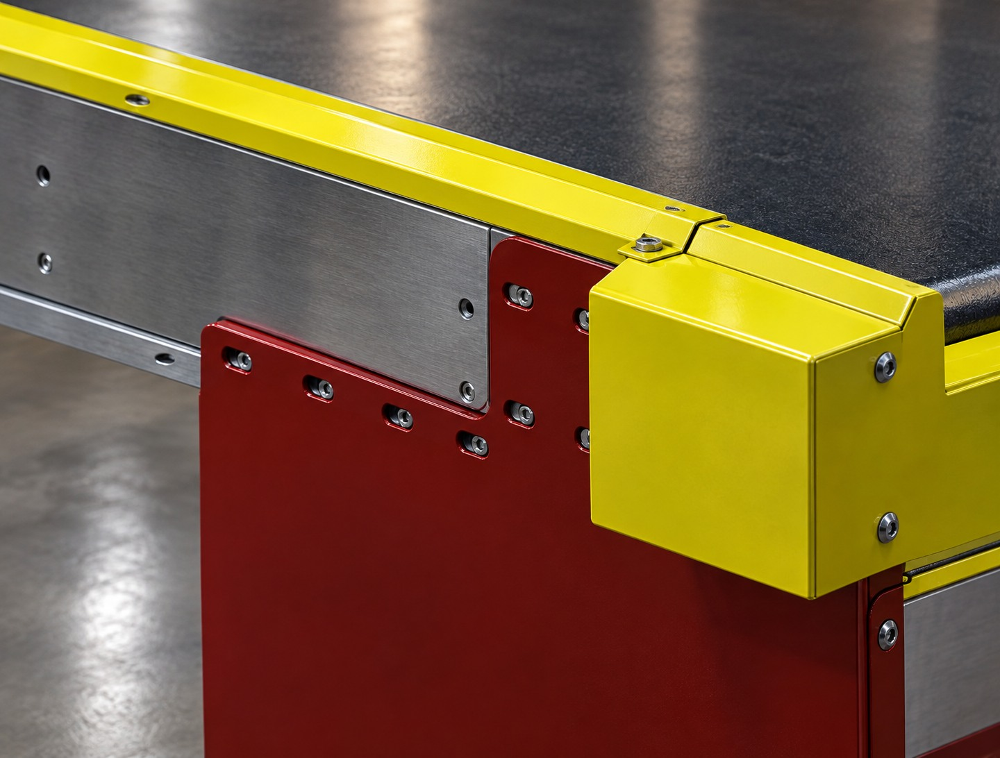
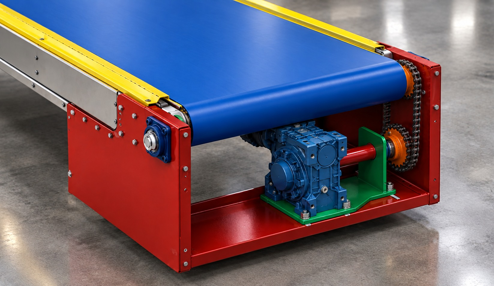

Manual de Instruções
Esteira de Alimentação de Carga — CIA Canoinhas

Clique para ampliarCEP 89460-000
Móvel sobre rodízios
V220B 05M00 · 800 mm · guia central
Código 28470
Redutor WCG01 i = 1:20
980 kg
2 similares 8" traseiros (com freio)
(rodízio 8" + pé de fixação)
+ fotocélula refletiva PAR-2MDNP
local_shipping 1. O Equipamento
1.1 O que é este equipamento
A Esteira de Alimentação de Carga CIA Canoinhas, código de fabricação 28470, é uma esteira transportadora móvel sobre rodízios concebida para as operações de carga e descarga de veículos. A estrutura é dividida em duas partes: uma ponta permanece do lado de fora, no piso, e a outra é conduzida para dentro do baú do caminhão, ficando apoiada sobre o piso da caçamba.
Dessa forma, a esteira funciona como uma ponte entre o estoque de pacotes e o baú: o operador no lado de fora coloca o pacote sobre a correia, a correia o conduz até o interior do baú, e o segundo operador, positioned dentro do baú, retira o pacote e faz o empilhamento. Com isso elimina-se o lançamento manual de dentro para fora, que é a causa mais comum de lesão por esforço repetitivo e de queda de carga na operação de carga.
1.2 Fluxo da Operação
- Preparo: a esteira é empurrada até o caminhão e posicionada, travando-se os rodízios.
- Conferência: verifica-se a tensão da correia, o aperto do painel e a integridade do cabo elétrico.
- Entrada do operador interno: o operador 2 entra no baú e comunica sua posição ao operador 1.
- Carga: o operador 1 aciona a esteira no painel e posiciona os pacotes sobre a correia.
- Recebimento: o operador 2 retira o pacote, alinha e empilha conforme o plano de carga.
- Desligamento e retirada: ao terminar, desliga-se o painel, o operador 2 sai do baú e a esteira é retirada com o caminhão ainda parado.
1.3 Comprimento da Correia
A correia da esteira 28470 tem comprimento de 24.012 mm, sendo 23.872 mm de perímetro de percurso e 140 mm de curso do esticador.
| Parâmetro | Valor |
|---|---|
| Comprimento total da correia | 24.012 mm |
| Perímetro de percurso | 23.872 mm |
| Curso do esticador | 140 mm |
| Folga de emenda | Definida com o fornecedor da lona |
Fechamento do comprimento
O comprimento final é fechado com o fabricante da correia, que define a folga de emenda. Na cotação, informe sempre a medição real em campo do perímetro de trabalho, e não apenas o valor de referência — correia comprida demais força o esticador até o fim de curso e reduz a vida útil da emenda.
Aclive de Operação
O aclive é definido pela diferença de altura entre a ponta externa (piso do pátio) e a ponta interna (piso do baú). Como a esteira é lisa, a tração do pacote depende do atrito — registrar o aclive real da operação e observar se o pacote mantém o aderimento durante a carga.
1.4 Mobilidade — Onde a Esteira Apoia
A esteira é sustentada por quatro rodízios de 8", dispostos em dois grupos:
| Conjunto | Quantidade | Tipo | Posição |
|---|---|---|---|
| Dianteiros | 2 | Colson 8" giratórios com amortecedor | Na cabeceira (rolo de tração) |
| Traseiros | 2 | Marca similar 8" giratórios com freio | No esticador |
Os rodízios dianteiros são amortecidos para absorver o impacto da entrada da esteira no baú. Os traseiros têm freio, que é obrigatório: sem ele, a esteira pode rolear para dentro ou para fora durante a carga.
1.5 Dimensões Principais
| Cotação | Valor | Origem |
|---|---|---|
| Comprimento total | 11.900 mm | Extremo a extremo da estrutura |
| Largura total | 940 mm | Largura da estrutura |
| Altura da mesa | 830 mm | Do piso até a superfície da mesa |
| Peso do conjunto | 980 kg | Sem carga |
| Largura da correia | 800 mm | Folga de 70 mm por lado sobre a estrutura |
| Diâmetro do rolo de tração | 112 mm | Para identificação da peça |
| Rodízio dianteiro | 2 Colson 8" com amortecedor | Na cabeceira |
| Rodízio traseiro | 2 similares 8" com freio | No esticador |
| Furação da platina | A informar | Pendente de definição |
Distribuição de Carga nos Rodízios
Com 980 kg distribuídos em 4 rodízios, cada um recebe:
245 kg por rodízio
Com a esteira em aclive, a carga se redistribui entre os rodízios. Registrar o aclive real da operação e conferir a capacidade nominal de cada rodízio.
- Confira a capacidade nominal de cada rodízio — o valor de projeto é próximo de 260 kg, e a capacidade tem de ser superior a isso, com folga para impacto na entrada do baú.
- Um rodízio subdimensionado queima o mancal e trava a esteira no meio da operação de carga.
- A estrutura tem 70 mm de folga de cada lado da correia de 800 mm — é por onde passam o cordão de emergência, o suporte da fotocélula e o reforço central.
Por que 830 mm?
A altura de 830 mm coloca a mesa na altura da cintura/quadril do operador, o que permite a alimentação manual sem esforço repetitivo e mantém o pacote na altura adequada de entrega dentro do baú. Essa altura é resultado do conjunto rodízio 8" + pé de fixação — mudar a altura do pé altera o comprimento útil da correia e exige recalcular o comprimento (ver seção 1.4).
category 2. Componentes
A esteira é formada por conjuntos pensados para serem mantidos em campo, sem dependência de oficina. A relação das peças de reposição, com botões de cotação, está na seção Peças de Reposição.
1. Estrutura e Chassi
- Longarinas: perfis de aço-carbono que suportam os conjuntos de roletes, a correia e a carga. Devem ter caixote para impedir o acúmulo de serragem.
- Travessas de amarração: mantêm o conjunto rígido e impedem a abertura das longarinas.
- Tranversal de apoio: reforço intermediário que reduz a flecha (deformação) da correia no vão livre.
2. Conjunto de Rodízios 8"
- Amortecedor: absorve o impacto da entrada da esteira no baú e a oscilência entre o piso do pátio e o piso da caçamba.
- Freio (traseiros): imobiliza a esteira durante a carga. Deve estar acionado sempre que houver operador dentro do baú.
- Capacidade: 245 kg por rodízio (980 kg ÷ 4). Conferir a capacidade nominal — ver a seção 1.6.
- Pé de fixação: conjunto que dá a altura final de 830 mm da mesa em relação ao piso.
3. Correia e Guia Central
- Correia CT V220B 05M00: lona de PVC preto fosco, 2 lonas, 800 mm de largura, com guia central.
- Guia central: barra de sustentação que apoia a correia pelo centro e distribui a carga sobre o conjunto de roletes.
- Canais da guia: a guia central entra em canal usinado no rolo de tração, no rolo esticador e na mesa — ver a seção 3.2.
- Roletes da mesa: sustentam a correia pelo lado da carga, mantendo o alinhamento lateral.
4. Acionamento (somente mecânico)
- Motor WEG 2,2 kW / 3 cv, flange 90 B14: aciona o conjunto. 4 polos, 1.750 rpm a 60 Hz.
- Redutor WEG WCG01 V90 1HH C90 2,2 kW 4P, tamanho 090, relação 1:20, coroa e sem-fim: reduz a rotação e entrega torque constante na partida com carga.
- Base rígida com 6 parafusos em furos oblongos: é por ela que se tensiona a corrente de tração — ver a seção 3.3.
- Corrente de tração: transmite o giro do redutor ao rolo de tração.
- Posição: na frente do equipamento, puxando a correia.
- Acoplamento: elástico, protege motor e redutor de choques de partida.
- Rolo de tração: D = 112 mm, com canal para a guia central.
O acionamento é totalmente mecânico: o ajuste da correia é feito pelo fusop M20 e o da corrente de tração pela base oblonga do motoredutor — sem nenhum eixo motorizado, hidráulico ou elétrico de ajuste.
5. Cabeceira Oposta e Esticador
- Rolo esticador: conjunto móvel com canal para a guia central, que comprime a correia no lado de retorno.
- Tensionador por fusop M20: barra roscada M20 com porca interna (tração) e porca externa (ajuste). Para tensionar, afrouxe a interna e aperte a externa.
- Curso de ajuste: 140 mm. É a reserva de tensão para compensar o alongamento da correia em uso.
6. Dispositivos de Segurança
- Cordão de emergência Schmersal: percorre a lateral da esteira, com cabo vermelho, olhais e guias intermediárias.
- Fotocélula Metaltex PAR-2MDNP + refletor: detecção de pacotes na linha, com refletor no lado oposto.
- Tampas / nips nas duas pontas: chapa de 2,00 mm, protegendo o acesso às partes de entrada e saída.
7. Painel de Comando
- Painel fixo na estrutura — anda com a esteira. No escopo do equipamento, apenas o envelope e os furos de cabo.
- Botão Liga / Desliga (verde / vermelho): comando principal, ao alcance do operador externo.
- Disjuntor termomagnético: proteção do motor, testado periodicamente.
- Tomada e cabo de alimentação: ligação à rede elétrica. O cabo é o item mais sujeito a dano na operação — ver a seção de segurança.
- Aterramento: borne dedicado, com borne da carcaça do motor e da estrutura.
Atenção
Nunca remover, furar ou soldar qualquer componente estrutural sem antes consultar a Zico. Alterações não homologadas anulam a garantia e comprometem a segurança da máquina — sobretudo a resistência do conjunto sobre rodízios, que é calculada para a carga máxima em aclive.
emergency 3.1 Dispositivos de Segurança
Os dispositivos de segurança são instalados integralmente na máquina e acompanham a esteira quando ela se desloca. Esta seção descreve cada um deles e as condições de uso.
Cordão de Emergência (Schmersal)
O cordão de emergência é um cabo de aço com capa vermelha que corre na lateral da estrutura, em toda a extensão, permitindo que qualquer operador — inclusive o que está dentro do baú — puxe o cabo para parar tudo. O acionamento é feito por um interruptor de segurança Schmersal sensível à tensão do cabo.
Composição do Sistema
- Cabo de aço + capa vermelha: elemento que o operador puxa para acionar a parada.
- Olhais: fixação do cabo nas pontas e nos pontos intermediários.
- Guias intermediárias: conduzem o cabo e evitam que ele se afaste da estrutura ou enrole.
- Interruptor Schmersal: sensor que detecta a tensão no cabo e comanda a parada.
Regra de ouro do cordão
O cabo do cordão de emergência corre pela alma do U, na lateral da estrutura. O reforço central não pode tapar o percurso do cabo — se o reforço for sobreposto ao canal, o cordão não passa e o sistema de parada fica inoperante. Antes de liberar a máquina para operação, puxe o cordão em toda a extensão e confirme a parada em cada ponto.
Fotocélula de Detecção (Metaltex PAR-2MDNP)
A fotocélula é um sensor fotoelétrico refletivo montado em suporte Metaltex, com um refletor instalado no lado oposto da esteira. Ao detectar a presença de pacote na linha, ela envia o sinal ao comando — usado para contagem de pacotes, parada por acúmulo e controle de ciclo.
Cuidados com o Sensor
- Limpar a lente e o refletor regularmente — poeira e serragem reduzem a confiabilidade da leitura.
- Não ajustar o alinhamento fora da planta. O sensor e o refletor são emparelhados: mexer em um sem o outro compromete a detecção.
- Verificar o aperto do suporte — o suporte Metaltex não pode girar nem tombar.
- Se a fotocélula disparar indevidamente, primeiro limpe a lente. Só depois investigue o comando.
Tampas e Nips das Pontas
As duas pontas da esteira são fechadas por tampas / nips em chapa de 2,00 mm. Estas tampas impedem o acesso às partes móveis (entrada e saída da correia) e são um requisito da NR-12.
- As tampas devem estar inteiras, parafusadas e sem folga.
- Antes de operar, confirme que nenhuma tampa está solta, deformada ou ausente.
- Nunca operar com a tampa removida, nem em condições de manutenção com a correia em movimento.
Checklist de Segurança — Antes de Cada Carga
| Item | Como Verificar | Condição para Operar |
|---|---|---|
| Cordão de emergência | Puxar o cabo em toda a extensão | Parada em todos os pontos |
| Interruptor Schmersal | Teste de acionamento | Aciona e rearma corretamente |
| Fotocélula + refletor | Passar um pacote pela frente | Detecta e rearma |
| Tampas das pontas | Inspeção visual | Íntegras e parafusadas |
| Freios dos rodízios traseiros | Testar imobilização | Imobiliza a esteira |
| Botão de desliga do painel | Localização e teste | Ao alcance, funciona |
warning 3.2 Segurança no Interior do Baú
O trabalho dentro do baú exige rota de saída livre e comunicação permanente com o operador externo. Esta seção define as exigências mínimas para a operação.
Meios de Acesso e Saída
- Sempre manter uma rota de saída livre. O operador interno não pode ficar encurralado entre a carga empilhada e a parede do baú.
- A carga deve ser empilhada a partir da frente, deixando a região junto à traseira desimpedida para a saída.
- É TERMINALMENTE proibido o operador interno entrar no baú com a traseira fechada.
Comunicação
- Os dois operadores precisam se comunicar continuamente — idealmente por rádio comunicador.
- Se houver apenas um aparelho, ele fica com o operador externo, que é quem comanda a esteira.
- O operador interno deve imediatamente avisar qualquer irregularidade ao operador externo, que desliga a esteira no painel.
Parada de Emergência
- Antes de iniciar, o operador externo deve identificar o botão de desliga do painel e confirmar que ele está ao alcance da mão.
- O caminho até o painel não pode estar bloqueado por pacotes, paletes ou material empilhado.
- Em emergência, o operador interno deve caminhar até a traseira e sair do baú — nunca saltar lateralmente.
verified_user 3.3 Segurança Geral (NR-12)
Conformidade
Esta esteira deve operar em conformidade com a NR-12 (Segurança no Trabalho em Máquinas e Equipamentos). Abaixo, os requisitos obrigatórios que o operador e a manutenção devem conhecer.
Compromisso de Qualidade
"A segurança não é um dispositivo, é um estado de espírito e uma responsabilidade contínua."

Consulte o Manual sempre que houver dúvida.
swap_vert 4. Posicionamento no Caminhão
Esta seção é a mais crítica da operação. O posicionamento errado pode prensar o operador entre a estrutura e a caçamba, fazer a esteira tombar, ou fazer o caminhão partir com a esteira presa dentro do baú.
Checklist de Posicionamento
- Caminhão parado, freio de mão acionado e motor desligado. Sem exceção.
- Caminhão parado e sem possibility de partida com a esteira dentro do baú.
- Porta / escotilha traseira aberta e na posição de carga.
- Piso do baú livre: sem cabos, ferramentas, paletes ou material solto no percurso da ponta interna.
- Piso do pátio regular no trecho por onde a esteira será empurrada — evitar buracos e desníveis que travam os rodízios.
- Raio de giro livre: conferir se o caminhão não está estacionado em local que impeça a abertura completa da traseira.
- Ponta interna apoiada totalmente sobre o piso do baú, sem ficar pendurada na borda ou apoiada naSpoiler do caminhão.
- Freios de todos os rodízios acionados — a esteira não pode rolar para dentro nem para fora com o caminhão em movimento.
- Inclinação conferida: a ponta externa deve estar no piso e a interna levemente mais alta. Confirme a inclinação com a régua ou o nível.
- Cabo elétrico ligado de forma que não passe por baixo das rodas nem fique preso entre a estrutura e a caçamba.
- Comunicação estabelecida com o operador interno antes de ligar a esteira.
Prensamento do operador
Nunca permita que o operador interno fique entre a estrutura da esteira e a lateral do baú. Ao deslocar a esteira, ele deve sair do baú. Um corpo prensado entre metal e madeira pode causar lesão fatal em poucos segundos — a esteira pesa centenas de quilos e os rodízios não têm frenagem suficiente para resistir ao impacto.
oil_barrel 5.1 Plano de Lubrificação
Três pontos de lubrificação nesta esteira: mancais, rodízios e motoredutor.
| Ponto de Lubrificação | Lubrificante | Intervalo | Quantidade | Observação |
|---|---|---|---|---|
| Mancais — 5x F206 com rolamentos EX206 | Graxa EP-2 | A cada 200 h | Filme | Não exceda — excesso aquece e queima o rolamento |
| Rodízios — 2 Colson 8" dianteiros e 2 traseiros 8" | Graxa EP-2 | A cada 500 h | Filme | Ao rodar, deve ficar liso e sem ruído |
| Motoredutor — WEG 2,2 kW + WCG01 090 | Óleo EP-80/90 | Troca a cada 4.000 h | Até o nível | Verificar nível de óleo semanalmente |
Cuidados com a Lubrificação
- Limpe antes de lubrificar: sempre remova poeira e serragem. Graxa contaminada com abrasivo acelera o desgaste do rolamento.
- Dosagem: encher demais o mancal gera aquecimento e queima do rolamento.
- Use a bomba de graxa, nunca o dedo para forçar graxa sob pressão.
- Descarte sobras de lubrificante e estopas em contentores indicados, conforme a política ambiental.
build_circle 5.2 Tensionamento e Ajustes
Toda manutenção só é realizada com a esteira desenergizada, bloqueada e etiquetada (LOTO) e o caminhão estacionado. Ver a seção Segurança.
5.2.1 Tensionamento da Correia — Fusop M20
A correia CT V220B 05M00 alonga com o uso. Folga excessiva provoca escorregamento, salto de correia sobre o rolo e desgaste prematuro das bordas; tensão excessiva sobrecarrega os eixos dos roletes, a guia central e os mancais dos rolos.
O tensionamento é feito pelo esticador de fusop M20, montado na cabeceira oposta. É o único ajuste de tensão da máquina — não há eixo motorizado, hidráulico ou elétrico.

Clique para ampliarComo o Fusop M20 Trabalha
- Porca M20 interna: é a porca de tração. Enquanto ela estiver apertada, o conjunto fica travado e o fusop não avança.
- Porca M20 externa: é a porca de ajuste. É ela que avança o fusop e tensiona a correia.
Regra: para tensionar, afrouxe a porca interna e depois aperte a externa. Na ordem inversa, nada acontece — e é o erro mais comum.
Procedimento de Tensionamento
- Desenergize e bloqueie a esteira no disjuntor do painel. Confirme a ausência de tensão com multímetro.
- Afrouxe a porca M20 interna (2 a 3 voltas), liberando o avanço do fusop.
- Aperte a porca M20 externa — este é o movimento que tensiona a correia. A cada volta, meça a deflexão.
- Meça a deflexão no meio do vão, entre dois apoios consecutivos. O valor de referência de tensão é a definir com o fabricante da correia.
- Reaperte a porca interna para travar o conjunto e registrar o valor.
- Ao atingir o limite do curso do esticador (140 mm), a correia deve ser reencintrada ou substituída.
Tensão excessiva
Se a correia ficar visivelmente esticada e enrijida logo após a saída do rolo, a tensão está alta demais. O efeito colateral é o aquejamento dos mancais dos roletes e o estufamento da guia central — que não é regulável e significa substituição do conjunto.
5.2.2 Correção de Corredor
Se a correia atravessar mais para um lado do que para o outro (corrida lateral), o ajuste é feito também pelo fusop M20: basta apertar mais o lado para onde a correia está atravessando, para que ela deixe de correr.
Procedimento de Correção de Corredor
- Afrouxe a porca M20 interna do lado em que a correia está atravessando.
- Aperte a porca M20 externa desse mesmo lado, em meia volta por vez.
- Reaperte a porca interna e observe a nova posição da correia.
- Repita até a correia centralizar sobre a guia central.
- Se ao centralizar a tensão ficou fora do valor, reequilibre o conjunto apertando o lado oposto.
Ordem importa
Ajuste tensão e corredor no mesmo fusop. Por isso, sempre reaperte a porca interna depois de cada meia volta: se ela ficar frouxa durante o percurso, a correia pode dar um salto para o lado oposto, desfazendo o alinhamento.
- Correia corre para o lado: apertar mais o lado para o qual ela corre.
- Correia muito tensionada e desalinhada ao mesmo tempo: resolva primeiro a tensão, depois o corredor.
- Desgaste irregular nas bordas: sinal de desalinhamento crônico, não de tensionamento.
5.2.3 Tensionamento da Corrente de Tração (base do Motoredutor)
A corrente de tração transmite o movimento do redutor ao rolo de tração. O tensionamento desta corrente é independente do fusop M20: é feito deslizando a base do motoredutor nos furos oblongos.

Clique para ampliarPor que a base é Ajustável
A base do motoredutor é fixada com 6 parafusos em furos oblongos, que permitem deslocar o conjunto no sentido longitudinal. Ao correr a base, o operador ajusta o aperto da corrente. Ao final, os 6 parafusos são reaperto para travar a posição.
Procedimento de Ajuste
- Desenergize e bloqueie (LOTO). O caminhão deve estar estacionado.
- Afrouxe os 6 parafusos da base do motoredutor. Afrouxe todos — travar parcialmente impede o deslizamento e desalinha a corrente.
- Corra a base no oblongo, no sentido que aumente a tensão da corrente, até que ela encaixe plenamente no conjunto do rolo.
- Reaperte os 6 parafusos da base, de forma cruzada e uniforme.
- Verifique girando a esteira manualmente: a corrente deve estar firme, sem salto de dente e sem folga perceptível.
Erros mais comuns
(a) Esquecer de reapertar os 6 parafusos — a base solta durante a operação e a corrente perde tensão.
(b) Afrouxar apenas alguns parafusos — a base torce e a corrente fica desalinhada.
(c) Esticar demais — o excesso de tensão sobrecarrega os mancais do redutor e do rolo de tração, encurtando a vida útil de toda a corrente.
Correia e corrente: ajustes diferentes
Não confunda os dois tensionadores. O fusop M20 ajusta a correia (lado do esticador). A base oblonga com 6 parafusos ajusta a corrente de tração (lado do motoredutor). Ajustar a corrente não aumenta a tensão da correia, e vice-versa.
O curso dos furos oblongos da base permite ajustar a tensão da corrente conforme o alongamento em uso.
texture 5.3 Correia e Emenda
Especificação da Correia
| Campo | Valor |
|---|---|
| Tipo | CT V220B |
| Construção | PVC, 2 lonas, preto fosco |
| Trama | 05M00 |
| Largura | 800 mm |
| Guia | Com guia central (canal usinado nos rolos e na mesa) |
| Diâmetro do rolo de tração | 112 mm |
| Diâmetro do rolo de tração (D) | 112 mm |
| Perímetro de percurso | 23.872 mm |
| Curso do esticador | 140 mm |
| Comprimento de referência | ≈ 24.012 mm (sem folga de emenda) |
| Emenda | A definir com o fornecedor da lona |
| Aclive de operação | ________ % (registrar na operação) |
Canais da Guia Central
A guia central não apoia sobre a correia: ela entra em canal usinado nos componentes. Os três canais precisam ser modelados — são eles que sustentam e alinh a correia ao longo de todo o percurso.
| Componente | Canal | Função |
|---|---|---|
| Rolo de tração | Modelar | Guiar a correia na entrada, mantendo a guia central no eixo |
| Rolo esticador | Modelar | Guiar a correia na saída, durante o curso de ajuste de tensão |
| Mesa | Modelar | Sustentar a guia central por toda a extensão da mesa |
Atenção: canal não usinado
Se qualquer um dos três canais não for usinado, a guia central não engata corretamente, a correia perde o alinhamento e a tensão não se aplica de forma uniforme. O sintoma típico é a correia correr para um dos lados e desenvolver desgaste irregular nas bordas. Antes de instalar a correia, confirme os três canais.
Cuidados no Manuseio
- Não dobre a correia no sentido longitudinal — dobre apenas no sentido transversal, com o lado externo para fora.
- Mantenha a correia enrolada sobre o suporte e longe do piso para evitar contamination por óleo ou poeira.
- Limpe a correia com escova e pano antes de qualquer emenda. A superfície precisa estar limpa e sem gordura.
- Guarde em local seco e coberto — PVC e tramas de poliéster degradam com umidade e luz solar prolongada.
Sobre a Emenda
A correia opera em ciclo contínuo, o que provoca alongamento. A emenda é o ponto mais frágil do conjunto. O tipo de emenda é definido com o fornecedor da lona, e dois tipos são aceitos neste equipamento:
- O tipo de emenda é definido com o fornecedor da lona. Solicitar a especificação da emenda junto com a cotação da correia.
Emenda é um ponto crítico
A emenda mal executada é a principal causa de rasgo em cascade: um pequeno solto no ponto de emenda evolui rapidamente e derruba a correia inteira. A emenda deve ser feita por empresa especializada, com prensa e matriz corretas para a largura de 800 mm. Não improvise em campo.
center_focus_strong 5.4 Guia Central e Roletes da Mesa
A guia central K13 é a espinha dorsal da esteira. Ela sustenta a correia pelo centro e concentra o peso do pacote no conjunto de roletes, aliviando as longarinas. É o componente que mais influencia o alinhamento e a vida útil da correia.
Estrutura
- Barra guia central: perfil fixo, apoia a correia pelo lado do HIP (retorno).
- Conjunto de roletes da guia: sustentam a correia pelo lado da carga, mantendo-a nivelada.
- Eixos e mancais: sustentação dos roletes nos quadros intermediários.
Procedimentos de Manutenção
- Inspecione o desgaste da barra guia. Sulcos na face de contato da correia indicam que a correia já passou por ali muitas vezes — se o sulco é profundo, a barra precisa ser trocada.
- Verifique o aperto dos parafusos dos quadros de sustentação da guia, dos dois lados.
- Confira o giro dos roletes da guia. Rolete travado cria um ponto de tensão na correia e acelera o desgaste da emenda.
- Limpe a região sob a correia. O acúmulo de poeira e serragem forma uma crosta que rasga a face inferior da correia.
- Verifique o alinhamento longitudinal: a guia deve estar reta e paralela às longarinas.
Diagnóstico Rápido
| Defeito Observado | Causa | Ação | |
|---|---|---|---|
| Correia rasga sempre no mesmo ponto | Rolete travado ou barra guia com sulco | Trocar o rolete ou a barra guia | |
| Barra guia com folga lateral | Parafusos de fixação frouxos | Reapertar e verificar o esquadro | |
| Estalos ao passar o pacote | Roletes da guia sem graxa | Lubrificar conforme plano de lubrificação | |
| Face inferior da correia opaca e dura | Contaminação por óleo e poeira | Limpar e corrigir a vedação | |
| Estalo ao girar o rolo (com a esteira parada) | Rolamento EX206 com defeito / falta de graxa | Girar o rolo manualmente e escutar | Lubrificar; se persistir, trocar mancal F206 + rolamento EX206 juntos |
| Correia corre torta e o rolo vibra | Folga excessiva no rolamento / mancal frouxo | Verificar folga e aperto do mancal | Reapertar o mancal; trocar o par F206 + EX206 |
cast 5.5 Rodízios e Estrutura
Cuidados com os Rodízios
- Capacidade de carga: o conjunto pesa 980 kg sobre 4 rodízios, o que dá 245 kg por rodízio. A capacidade nominal de cada rodízio tem de ser superior a esse valor.
- Acionar o freio antes de o operador entrar no baú. Rodízio sem freio não segura a estaira na rampa.
- Não forçar a entrada no baú: o batimento contra a traseira danifica o aro e pode quebrar o pino de fixação da estrutura.
- Girar corretamente: arraste a estrutura pelo chassi, nunca pelo cabo elétrico, pela correia ou pelo painel.
Manutenção Periódica
| Item | Ação | Intervalo |
|---|---|---|
| Rolamento da roldana | Girar a roda; verificar folga e ruído | Semanal |
| Amortecedor (dianteiros) | Inspecionar trincas e deformação | Mensal |
| Furo da platina | Verificar aperto e ausência de folga | Mensal |
| Freio (traseiros) | Testar se imobiliza completamente | Diária, antes do uso |
| Graxas do conjunto | Aplicar graxa no rolamento | A cada 500 h |
| Fusop M20 e porcas | Verificar aperto e ausência de rosca batida | Mensal |
Estrutura e Parafusos
- Reapertar os parafusos das uniões de campo periodicamente — o vibrado da operação solta.
- Verificar se as travessas de amarração não têm deformação, fissura de solda ou corrosão.
- Manter o chassi limpo e sem acúmulo de serragem sob as longarinas — o acúmulo retém umidade e acelera a corrosão.
- Se houver ponto de corrosão na estrutura, não ignore: limpe, aplique primer e repintura antes que vire furo.
settings 5.6 Mancais, Rolamentos e Engrenagens
Os apoios do conjunto são mancais tipo F206 montados com rolamentos tipo EX206. Este é o par padronizado do equipamento: ao comprar, informe exatamente F206 + EX206 — rolamentos com outras letras não montam no mancal.

Clique para ampliarEspecificação dos Mancais
| Item | Quantidade | Especificação |
|---|---|---|
| Mancal | 5 | F206 — corpo em ferro fundido, fixação por flange |
| Rolamento | 5 | EX206 — rolamento de contato profundo, anel interno extended (anel interno estendido) |
| Furo interno | — | 30 mm (padronizado do par F206 / EX206) |
Dos 5 mancais, 1 fica na base do redutor e os demais nos rolos. Conferir a distribuição exata (um de cada lado) no plano mecânico antes de cotar.
Engrenagens da Corrente de Tração
A transmissão do redutor até o rolo de tração é feita por corrente, com uma engrenagem em cada extremidade:
| Peça | Código | Dentes | Diâmetro de passo | Observação |
|---|---|---|---|---|
| Engrenagem no rolo de tração | 1.50.18 | 18 | 91,4 mm | Menor — acoplada ao eixo do rolo |
| Engrenagem no redutor | 1.50.35 | 35 | 177,1 mm | Maior — acoplada à saída do redutor |
| Relação de redução | 1,944 : 1 | |||

Clique para ampliarEspecificação da Corrente
| Parâmetro | Valor |
|---|---|
| Padrão | ASA 50 (ANSI 50 / ISO 10B-1) |
| Passo | 15,875 mm |
| Número de elos | 64 elos |
| Comprimento | 1.016 mm |
| Número de elos | 64 elos |
Para Cotação
Corrente ASA 50 · 64 elos · 1.016 mm de comprimento
Manutenção dos Mancais e Rolamentos
- Girar o rolo manualmente antes de ligar: deve girar liso e silencioso. Qualquer estalo ou arrasto é sinal de rolamento com defeito.
- Verificar folga radial e axial. Folga excessiva gera vibração no rolo e faz a correia correr torta.
- Aperto dos parafusos do mancal — reaperte periodicamente; a vibração da operação solta.
- Não passar o peso do rolamento pela Race Externa ao montar: force pelo anel interno (o que recebe carga) para não marcar as pistas.
- Verificar a vedação (retentor / escova) — entrada de poeira destrói o rolamento silenciosamente.
- Trocar mancal e rolamento juntos. Rolamento novo em mancal velho (com pista desgastada) falha cedo.
electric_bolt 5.7 Motor e Redutor
Acionamento (Somente Mecânico)
| Item | Especificação |
|---|---|
| Motor | WEG 2,2 kW / 3 cv — flange 90 B14 |
| Rotação | 4 polos — 1.750 rpm a 60 Hz |
| Redutor | WEG WCG01 V90 1HH C90 2,2 kW 4P — tamanho 090 |
| Relação | i = 1:20 (coroa e sem-fim) |
| Rotação de saída do redutor | 87,5 rpm |
| Transmissão até o rolo | Corrente de tração — engrenagens 1.50.35 (redutor, 35 dentes) e 1.50.18 (rolo, 18 dentes) |
| Relação da corrente | 1,944 : 1 |
| Rotação do rolo de tração | 87,5 ÷ 1,944 ≈ 45,0 rpm |
| Base | Rígida, com 6 parafusos em furos oblongos e 1 mancal F206 |
| Posição | Na frente, puxando a correia |
Motor Elétrico
- Confirme a tensão de alimentação: motor de 220 V só pode ser ligado em rede de 220 V. Ligar 380 V em motor de 220 V queima o motor. Um motor de 2,2 kW em 380 V trabalha com corrente bem menor do que em 220 V — confira a placa antes de ligar.
- Limpeza da carcaça: mantenha as aletas livres de serragem e poeira, para garantir a dissipação de calor.
- Ventilação: nunca operar com o ventilador ou a tampa do borne danificados.
- Ruído e cheiro: zumbido alto, estalo ou cheiro de queimado = desenergize imediatamente.
Redutor coroa e sem-fim
- Verifique vazamento de óleo em tampa, olhais e vedações.
- Um zumbido contínuo indica falta de lubrificação; um estalo intermitente indica dente da coroa desgastado.
- Verifique o aperto dos parafusos de fixação e o alinhamento do acoplamento. Vibração excessiva é a principal causa de ruptura de dentes.
- O respiro (breather) deve estar limpo, permitindo a saída de gases.
troubleshoot 6. Diagnóstico de Falhas
Utilize a tabela abaixo para identificar rapidamente a causa raiz das falhas mais comuns. Antes de qualquer reparo, desenergize e bloqueie o equipamento (LOTO).
Quando acionar a assistência técnica
Procure a Zico quando houver: substituição da correia ou refeitura de emenda, troca do rodízio MKA, troca da barra guia K13, defeito no redutor ou qualquer alteração de comprimento e inclinação. A equipe técnica dimensiona o conjunto para a carga real de papel higiênico e fornece o plano de manutenção.
inventory_2 7. Peças de Reposição
Lista de Peças
| Código | Descrição | Un. | Qtd. | Observação | Cotar |
|---|---|---|---|---|---|
| ——— | Redutor WEG WCG01 V90 1HH C90 2,2 kW 4P — tamanho 090 | pc | 1 | Relação 1:20, coroa e sem-fim | shopping_cart Cotar |
| ——— | Correia CT V220B 05M00 — PVC 2 lonas, preto fosco, 800 mm | pc | 1 | Comprimento total: 24.012 mm (fechado com o fabricante). Informar a medida real de campo | shopping_cart Cotar |
| ——— | Corrente de tração ASA 50 — 64 elos | pc | 1 | Comprimento total: 1.016 mm | shopping_cart Cotar |
| ——— | Engrenagem do rolo de tração — 1.50.18 | pc | 1 | Conferir dentes, passo e furo conforme eixo do rolo | shopping_cart Cotar |
| ——— | Engrenagem do redutor — 1.50.35 | pc | 1 | Conferir dentes, passo e furo conforme eixo do redutor | shopping_cart Cotar |
| ——— | Rolamento EX206 (furo 30 mm) | pc | 5 | Monta no mancal F206 — citar o par F206 + EX206 na cotação | shopping_cart Cotar |
Solicitação de peças
Esta lista cobre apenas as peças de reposição: redutor, correia, corrente, engrenagens e rolamentos. Use o botão Cotar para solicitar direto pelo WhatsApp — o texto da peça já vai escrito, com o código de fabricação 28470.
Cotação de peças: (47) 99186-6317 · Dúvidas sobre o equipamento: (47) 99186-5021
Na cotação, informe também a aplicação (cabeceira motora / esticador) e uma foto da peça instalada.
Atenção: a correia deve ser cotada com o comprimento medido em campo — o valor teórico é só referência. No rolamento, cite sempre o par F206 + EX206.